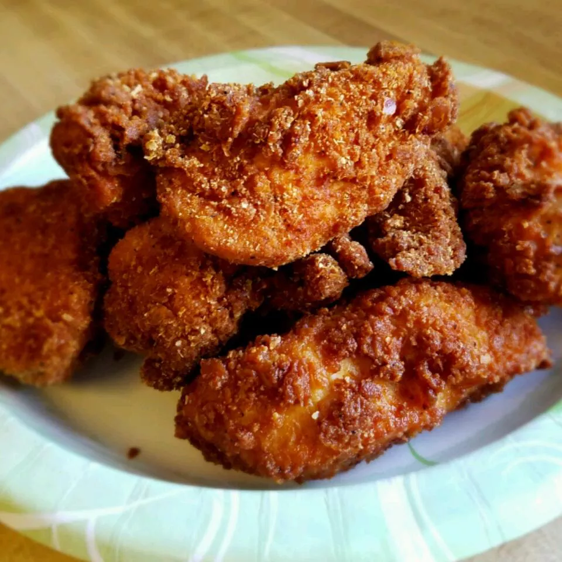

Fried Chiken

Discription
A fun chicken recipe the kids can help prepare. They love crushing the crackers. It does not matter if the measurements aren't perfect, just wing it!
Ingradients
- 30 saltine crackers
- 2 tablespoons all-purpose flour
- 2 tablespoons dry potato flakes
- 1 egg, beaten
- 6 skinless, boneless chicken breast halves
How to Make Fried chicken
- Step 1 - Place crackers in a large resealable plastic bag, seal bag and crush crackers with a rolling pin until they are coarse crumbs. Add the flour, potato flakes, seasoned salt, and pepper and mix well.
- Step 2 - Beat egg in a shallow dish or bowl. One by one, dredge chicken pieces in egg, then place in bag with crumb mixture. Seal bag and shake to coat.
- Step 3 - Heat oil in a deep-fryer or large saucepan to 350 degrees F (175 degrees C).
- Step 4 - Fry chicken, turning frequently, until golden brown and juices run clear, 15 to 20 minutes.